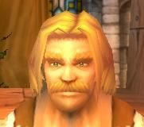
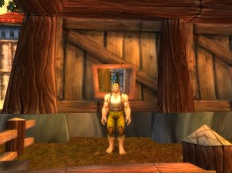
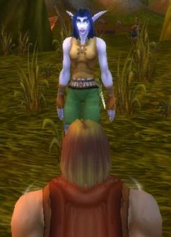

Joué par :
Garel Joué par :
[ Information masquée ] Age : 22
Signe de naissance : ours
Sexe : Homme
Race : Humain
Faction : Alliance
Formation : Guerrier
Niveau : 21
Guilde : Informations hrp : Je laisse les anciennes indications, qui me servaient de fil conducteur pour ce personnage, à la fin de ces nouvelles lignes. Averell est maintenant embarqué malgré lui (et de bon gré par moi) dans une conflit pour sont corps et sont âme qu'il n'aurait jamais imaginé (moi si, ha ha ha) ce dernier m'a été inspiré en parti, par un autre de mes personnages qui se trouve dans une autre dimension, plus connut sous le nom d'autre serveur et de la sanssaint de blizzard qui à pointé sont nez au bon moment. Voila la situation actuel malheureusement j'ai pris du retard dans mais récit. De plus je suis en train de reprendre mes anciens textes pour les corriger.
//Ni un héros, Ni un grand méchant cherchant à dominer le monde. Seulement un homme un peut perdu, qui laisse un peut trop souvent les événements décidés à sa place//
Description : Après avoir vécue une enfance réfugier dans ses rêves, afin d'échappé le plus possible à ce qui ce passé dans le monde. Il fut jeté dehors par son père, qui en avait marre d'attendre qu'il se décide à reprendre l'entreprise familiale de construction. Ne sachant pas quoi faire il errât pendant quelque temps avant de se retrouvé presque sans un sous ce qui le poussa à parti au Northshire (au comté du nord) là ou une affiche, qu'il avait lu, prétendait que l'on avait besoin de bras.
Troisième Ère [13]
Lune de la Force [4]
Décade du Panda
Décade du Gorille
Décade de l'Ours [4]
Souvenir d'un début
Averell se réveilla. Sa tête le faisait souffrir. Passant sa main dans ses cheveux, il s'aperçu que sa tête était pansé. Quand une douce voix l'interrompit « ni touché pas la plaie est encore fragile. ». Il ouvrit les yeux pour voir d'où venait cette voix si apaisante mais. Il lui fallut plusieurs minutes pour que sa vue devienne à nouveau nette. C'est alors qu'il vit une jeune femme, aux cheveux blonds, penché au-dessus de lui. Elle vérifié son bandage.
«
- Il vous faudra encore plusieurs jours de repos avant de pouvoir repartir.
- Où suis-je ? Qui êtes vous ?
- Vous êtes à l'auberge de la fierté du lion dans le Goldshire (le comté d'or) et je suis médecin, hier vous vous êtes écroulé dans l'auberge, la tête en sang. Est-ce que vous vous souvenez de quelque chose ?
»
Il fit un effort pour se souvenir mais il avait trop mal à la tête.
«
- Je ne sais pas, j'ai mal.
- Buvait cela, ça vous soulagera.
»
Averell avala comme il pu le récipient qu'elle lui tendait. Puis après quelque seconde il sombra doucement dans un sommeil sans rêve.
Il se réveilla de nouveau, dans une obscurité presque total. Ce dois être la nuit ce dit il. Une fois que ses yeux furent habitués à la pénombre, il observa autour de lui. La chambre était vide, avec pour seule lumière celle pénétrant part le jeu de la porte. Et qui avec les bruits étouffés par les murs et la porte, des aventuriers ripaillant et racontant leurs aventures aux badauds dans la salle du dessous, transformait la pièce en un repaire de spectre. S'asseyant il tenta de se rappelé les événements qui l'avait conduit ici.
Une mine, des kobolds, une elfe. Il grogna, tout était flou et rien ne ramenait à cette auberge. Ce calment il ferma les yeux et remonta encore plus loin dans ses souvenir.
 S'était le 4ème jour de la Décade de l'Ours pendant la Lune de la Force. Il s'était réveillé dans l'écurie de l'abbaye du Northshire (du comté du nord) où il était arrivé la veille. Ses bottes avaient disparu, on avait du les lui voler pendant la nuit. Et malgré ses recherches il ne les avait pas retrouvé. L'homme de la veille était toujours la à attendre. S'il était le voleur il n'y en avait nul trace. Résigner il était allé voir celui qui répondait au nom de Willem, car il prétendait savoir où lui trouver du travail. Ce qu'il fit en l'envoyant voir d'autres personnes, ayant besoin d'aide.
Et s'était pendant l'une de ces différentes taches qu'il avait rencontré cette elfe,
 celle de ses souvenirs. Sa mémoire commençait à recoller les morceaux même s'il ne se souvenait toujours pas du nom de cette dernière ou de comment il avait finit ici. Confient il reprit sont travaille remémoration.
La première fois qu'il l'avait vue, il était en train de rosser des kobolds lorsque des flèches étaient venues achevés tous ceux qu'il n'avait pas mit Ko. Il se souvenait à présent avoir était ébahi par la précision de ces tirs et troublé par le bleu de sa peau. Car même si il avait déjà vue des elfes par le passé, s'était la première fois qu'il voyait une elfe de la nuit. Quant à elle, elle l'avait pris en pitié de le voir pied nu et lui avait donné une paire de botte, avant de repartir vers l'abbaye. Lui avait continué à faire ce qu'on lui avait demandé en échange de quelque récompense. Et ils s'étaient revus, quelques heures après. Seulement il avait changé, il avait une arme cette fois si. Oui, il s'en souvenait maintenant. Willem la lui avait donné en récompense pour services rendus à la milice du Nothshire (du comté du nord). Lors de cette seconde rencontre ils avaient beaucoup parlé, des raisons qui faisaient qu'elle ce trouvait ici,
et de la discussion qui en avait découlé. Il se demanda, avant de reprendre le court de ses souvenirs, si la haine quelle éprouvée à l'encontre de l'inquisition, malgré sa sagesse apparente, ne la faisait pas sous-estimer la menace que peut représenter les démonistes. Il se souvenait à présent du voyage qu'ils avaient entreprit pour ce rendre au Goldshire (au comté d'or) et de l'auberge ou ils s'étaient reposé avant de partir pour une mine qu'elle devait exploré. Par contre dans la mine, il ne ce souvenait de presque rien. Que s'était il passé là-bas ? Ou était cette fameuse elfe qui l'accompagné. Il avait beau réfléchir il n'arrivait plus à reconstituer le pulse de ses souvenir. Alors frustré il se recoucha avec le maigre espoir que sont sommeil l'aiderait.
La visite médicale
Le soleil semblait déjà haut, Averell ouvrit la fenêtre, puis se tourna vers son médecin.
"
- voila un moment que vous me posait des questions et je ne sais même pas votre nom.
- Si je vous pose tant de question ces pour décelé des séquelles éventuels.
- Oui vous m'avait déjà expliqué tout cela, mais
- Reprenons si vous le voulez bien ! Que c'est il passé après que vous soyez parti de l'auberge ?
"
L'interrompit elle en lui tendant une chaise.
"
- Ces a ce moment que mais souvenir devienne de plus en plus flou. Je sait que
- Assied vous idiot, sinon comment voulez vous que je regarde cette plaie !
- Heu oui, excusé moi.
- alors continué !
- oui, heu... Ha oui je sait que nous avons AYE atteint la mine mais tout le reste est noir. Le vide complet.
- Vous ne vous souvenez vraiment de rien après cela ?
- De rien, vous pensez que ces graves ?
- Non, cela est fréquent, chez les gens qui on subit un grave choque à la tête, de perdre une partie de la mémoire récente. Je dirais même que vous avez de la chance, car souvent ils oubli la journée entière et non les quelques heures ou minutes qui on précédé l'accident.
- Alors pourquoi me posé vous toute ces question ?
- Pour m'assurer que vous vous rétablissez bien. D'ailleurs ça me fait pensé que j'ai discuté avec l'aubergiste, et il m'a dit que vous êtes arrivé avec une elfe qui et reparti juste après. Et que ces seulement après quelque minute que vous vous êtes effondrait au sol.
- Alors elle doit savoir se qui sait passé.
- Oui mais vous ne connaissez pas sont nom. Comment allez vous vous y prendre pour la retrouver ?
- Je ne sait pas, mais s'est pour ça que j'aimerais connaître votre nom. Pour ne pas me retrouver dans la même situation si le cas se présente.
"
Elle soupira légèrement avant de répondre. " Je m'appelle Michelle. "
Une fin de travail mouvementé
Enfin il serait bientôt libre ! Cela faisait déjà trois jours qu'il travaillait pour payer ses dettes.
Et oui, même si Michelle ma belle, sont des mots qui vont très bien ensemble, il lui avait bien fallut payer les bandages et les potion prodiguait pour le sauver et ceci fait il n'avait plus eu assez d'argent pour payer l'aubergiste.
S'est donc pour cette raison qu'il assisté l'aubergiste depuis trois jours, tout en dormant dans la cave affin de ne plus occupé une chambre qu'il pouvait se payer
Le premier jour il avait dû ranger les chambres, faire la plonge et ranger les tonneaux qu'on venait de livrer à l'auberge. Mais ces deux derniers jours il lui avait fallu, en plus de la plonge et du ménage dans les chambres, débarrassé les tables et servir les clients. Ce qui pour cette dernière tache n'était pas une parti de plaisir, les aventuriers pour la plupart très pressait ne prenaient pas la peine de boire un verre et les habitués préférés faire affaire avec l'aubergiste plutôt qu'avec un petit nouveau. Mais il y avait de rares moment ou aimait faire se travail comme la fois ou un elfe lui avait donné des bougies pour la qualité de sont accueille et du service.
«
- Averell elle est ou l'argent pour le vin que tu vient de vendre ?
- Euh
»
Sortant de sa rêverie Averell écarquilla les yeux et laissa pendre sa mâchoire. Que la lumière le garde, il avait oublié de faire payer le client. L'aubergiste en voyant cette tête compris de suite.
«
- S'est pas vrai ! tu l'a fait exprès ou quoi ! le dernier jour avant la fin de ta dette. - Désolé patron.
- Pff, j' t'aime bien, tu t'applique dans ton travail, mais je peut pas te gardé éternellement, surtout si tu fais des bourdes pareilles, et puis j'ai déjà une assistante et suffisamment d'employés. Tu comprends il va falloir trouver une solution.
- J'ai qu'à lui courir après pour lui demander de payer.
»
L'aubergiste éclata de rire.
«
- Oui, dans cent ans tu l'auras peut-être rattrapé. Allé oublie ça et prend une pause on en reparlera après.
»
Averell parti en cuisine en traînant les pieds, comment avait il pu être aussi négligeant. Et comment pouvait il se rachetait sans perde encore plusieurs journée. Il s'assis en bas des marche de la cave et réfléchi. Quant Soudain, au bout de quelque minute, il eu une idée. Il se leva pris sont sac, traversa la taverne en courant et alla droit chez le marchant de la forge. Déballent tous son equipement, arme, armure et bouclier il dit.
«
- Pff combien pour pff le tous pff.
- Bah, faut vois la qualité.
- Vite s'il vous plaît !
»
Mais déjà l'aubergiste déboulait dans la forge criant.
«
- Où tu vas gamin ! - Ola, il ta dérobé quelque chose Farley.
- Non, non, j'ai rien volé, je cherchais juste une solu
- Toi tais toi ! Alors, Farley, s'est a toi tous sa ?
- Attend Andrew laisse le parlé, vas y je t'écoute Averell pourquoi t'est parti en courant.
- Je voulais pas parti je vous jure patron s'est juste que j'ai trouvé une solution pour payer.
- Ah et comment ? en vendant tous ça.
- Oui s'est tous se qu'il me reste.
- On va bien voir si t'on idée et bonne, Andrew sa fait combien le tous.
»
Andrew regarda les pièces d'armures les une après les autres avant de répondre.
«
- Bof, pas grand-chose, une ou deux pièces d'argents au maximum.
- J'ai aussi un peu d'argent, grâce au pourboire de quelques clients.
- Fait voir.
»
Averell tendit sa bourse à Farley l'aubergiste, qui se mit a marmonné, comme a chaque fois qu'il faisait des calcules. Andrew qui ne comprenait pas tout fouilla dans son sac et donna la somme que représenté l'équipement.
«
- et bas, tu t'en sort bien avec sa tu peut me remboursé le vin et ce qui te restait a payer pour la chambre, mais par contre je ne te donnerais pas un sous pour ton travail. S'est à toi de choisir tu travail encore un ou deux jours ou on ce quitte maintenant, bon compte, bonne yeux.
»
Averell n'hésitât pas longtemps et dit au revoir à Farley avant de partir pour Stormwind, sous les regards perplexes d'Andrew.
PS : je remercie tous ceux qui on jouer le jeu, comme Sylvar, Blasius et tous les autres dont j'ai oublier le nom.
PS : l'image ne représente pas l'homme a qui j'ai oublier de demandé de payer mais l'elfe mentionné. Je préfère le dire pour pas qu'il y est de mauvaise compréhension.
Visite à Stormwind, et nouveau départ
Quelle nuit, il fallait absolument qu'il trouve une solution pour ce procurer de l'argents.
La veille : La journée touchait à sa fin lorsqu'il arrivas à Stromwind. Il resta un moment sur le pont à admirer les statuts gardienne de la fière capitale. On ne lui avait visiblement pas menti en lui en parlant lorsqu'il était encore au village. Il faut que j'aille voir leur fameuse cathédrale ; ce dit il avant de reprendre sont chemin. A peine avait il pénétré dans la ville que déjà il pouvait apercevoir les trois flèches de celle-ci. Bien je n'aurais pas à la chercher ; ce dit il de nouveau. En chemin un homme, qui ventais la qualité de son vin, lui donnas un bon pour une bouteille de pinot, ne ce faisant pas prié il fit un détour pour aller la chercher, au moins il aurait de quoi boire ce soir. Arrivé devant la cathédrale il ne pu qu'approuvé quelle était bien plus belle qu'il ne l'imaginé et que la qualité de l'ouvrage n'avait d'égal que celle des statuts.
Une autre chose le surpris d'où il était les trois flèches semblaient de même taille alors que de loin celle du centre est beaucoup plus grande. En entrent il vit tout la dévotion des hommes qui la fréquenté, ce qui la dissuada de demandé l'asile pour la nuit, de peur qu'on lui demande de prié ou de ce confessé à la lumière. Car bien qu'il reconnaisse sa possible existence, il refusé que des hommes puisse imposé leurs volontés sous prétexte qu'ils en sont les guides. En sortant il vue que la nuit était tombé, il décidât donc de se trouver un coin pour passé la nuit. Quelle que minute plus tard il était installé derrière un amas de caisses, la faim le tenaillé, il n'avait rien mangé depuis midi. Soudain il distingua un très léger arôme qui émané des caisses, qui le protégé des passant. Malgré sont envi de ne point volé quelqu'un, il ne pu s'empêchait d'ouvrir l'une des caisses. Il y découvrit des bananes. Après en avoir prélevait quelques une, il referma la caisse soigneusement et se fit un repas bananes pinot, avant de se coucher. Malheureusement sa nuit ne fut pas aussi tranquille qu'il lue souhaité, car toute les heures il fut réveille par les cloches de la cathédrale, de plus le sol était très dur et il finit par se payer un mal de dos.
Maintenant il avais fui la capital pour se réfugier dans la forêt on il se reposé tant bien que mal, contre un arbre. Et puis, après tous que pouvait on lui voler, apparat ses bottes ?
Plus tard dans la journée il se leva la faim le tenaillé, il n'avait pas mangé depuis la veille. Mais que manger quant on a pas un sou. Errant dans la forêt à la recherche de nourriture il couru après des lapin, ce fit courser par des loups avant de tomber sur un petit groupe de défias gardant un coffre. Il n'hésita pas longtemps avant de se décider à les attaquer, après tous ces bandits sont une menace pour le royaume et il avait faim. Seulement a main nue il lui fallait jouer discret. Les attaquant un par un et toujours le plus éloigner en premier, il finit par arriver au coffre qu'il ouvrit a tout allure. Sans même prendre le temps de trier, il mit tous ce qu'ils y avaient dedans, dans sont sac et partit en courant de peur que d'autre défias arrive ou que ceux qu'il avait assommé se réveille. Arrivé à un lac il s'arrêta est regarda sont butin, il y avait trois pommes qu'il commença à dévorer, un bouclier, quelque pièce de cuivre et une petit pierre verte. Avec tous cela je devrais pouvoir me payer de la nourriture pensât il. Ce dirigeant vers la route il se demanda ou aller pour acheter sa nourriture, Stormwind ou le Goldhire. Il n'avait toujours pas décidé quant il vit une boulangère ambulante, qu'il arrêta pour lui en acheter. Comptant rapidement l'argent en sa possession il s'aperçu qu'il ne pourrait pas se payer de pain frais.
Heureusement il restait à la boulangère du pain rassis de la veille, quelle lui proposa a un prix raisonnable. Il en prit quelques un et reparti au lac qu'il avait quitté un peu plus tôt, afin de trempé le pain pour le rendre moins dur. Une fois rassasier, il descendit la rivière qui partait du lac, afin de trouvé un refuge. Au bout d'une dizaine de minute il finit par trouver celui-ci sous la forme d'une garnison de l'armé. Après être installé dans un recoin prés de l'entrer, il se reposa tranquillement en oubliant tous ce qu'il avait vécu ces derniers jours.
Lune d'Agilité [2]
Décade du Tigre
Décade du Singe [2]
Arriver et départ à la marche de l'ouest
Il s'était écoulé du temps sa nuit prés de la garnison du ruisseau de l'ouest. Au matin il était parti le plus vide possible pour ne pas qu'on lui demande des comptes, si on le surprenais à dormir près de la garnison.
Ensuite il avait erré pendant une bonne partie de la journée avant de tomber sur une ferme. Après un moment d'hésitation il avait finit par demander s'il pouvait se rendre utile et on lui avait confié une tâche à faire. Celles-ci finit il était allé dans d'autres fermes, il s'était même résolut à retourner au village du Goldshire, pour y chercher du boulot. Il ne se débrouillait pas trop mal, mais il avait eu un problème pour l'une d'entre elles. On lui demandé de tuer un kobold ce qui en soit une lui posé pas de problème mais ce dernier était dans la mine ou il avait eu sont accident, et malgré tous ses efforts il n'avait pus franchir le seuil de celle-ci. Une terrible engouasse le tenaillé dés qu'il s'en approché. Mais un jour ; qu'il était tombé sur un homme d'age mur avec lequel, ils s'étaient entre aidé ; il osa y entrer, avec ce dernier à qui il avait demandé de l'aider encor un fois.
Mais plus il gagnait d'argents plus les enseignements qu'il suivait lui coûtait cher, alors il avait continué à faire les boulot qu'on lui proposait, sans prendre très au sérieux les gens qu'il le considérait comme un mercenaire, car après tous il était presque.
Maintenant il ce trouvé à la marche de l'ouest, plus précisément à la colline des sentinelles. Pendant tous le trajet pour venir ici il avait eu le cur lourd, et encor plus depuis qu'il était arrivé. On lui avait expliqué comment toute cette région était devenu la proie des défias, et cela le mettait mal dans sont assiette. Comment pouvait on laissé les gens de cette régions seul fasse à cette menace. Car même s'il avait aperçu plusieurs aventuriers ici, c'était à l'armé de s'occuper tous cela.
Interrompant ses réflexions il regarda l'horizon, le soleil n'allait pas tarder à se coucher. Il me faut un endroit pour dormir et je ne me sens pas le cur à dormir ici, pensât il. Soudain il entendit un cri percent et vit un griffons ce poser à une centaine de mètre de lui. Il avait déjà entendu parlé de ce mode de transport mais ne l'avait jamais utilisé. S'approchant il ce renseigna sur les prix. Formidable je peut me payer le voyage pour Stormwind, murmura t'il. Alors, n'écoutant qu'a moitié les conseille du maîtres des griffons, il monta sur l'un d'entre eux, qui s'élança si vite qu'il faillit tomber. Mort de peur, à cause de cela, Averell passât tout le voyage agrippé le plus fort possible à la bête, qui se vengea en arrivant, à la capitale, en lui donnant un grand coup de queue qui le fit basculer ver l'avant. Une fois relevé Averell parti en direction de la sortie de Stormwind, en se jurant qu'il ne reprendrait pas de griffons de sitôt. Arrivé à la sortie il allât prés de l'arbre qui l'avait accueilli le jour où il n'avait pus dormir dans la capitale et fit un bon feu pour se préparé un repas et faire fuir les loups. Une fois le ventre plein il se coucha un peut honteux d'avoir lui aussi abandonné les habitants de la marche de l'ouest a leurs sorts.
A l'orphelinat
Ces enfants sont si étonnants. Malgré tous ce qu'ils ont subi, ils trouvent encor le goût de jouer. Averell les regardé pensif. S'il était venus ici s'était peut-être pour se faire pardonner sa fuite de la marche de l'ouest, car s'en était bien une. Soudain il se dit qu'il pourrait leur conter une histoire. Après tout il n'avait pas était la lors de la dernière journée des enfants il pouvait bien leur offrir un peu de temps aujourd'hui. Alors il s'installa au centre de la pièce et commenças à raconter une histoire. Au début les enfants écoutèrent l'histoire mais au bout de quelques minutes ils reprirent petit à petit leurs jeux.
Averell due se mettre à l'évidence il n'était pas douer pour raconter les histoires. Mais cela ne le découragea pas et il continua à raconter l'histoire de sieur Gerilk, paladin de sont état. (Personnage inventé alors si il excite un joueur avec ce nom qu'il me prévienne par M.P.)
Quand soudain alors qu'il arrivé a un moment crucial de sont histoire il entendis des cries d'effroi provenant de l'extérieur. Inquiet il sortie et couru dans la direction de ces cries. Lorsqu'il arriva prés de la source des cries ceux si avaient disparu et il n'arriva pas trouver la personne qui les avait pousser, mais compris vite pourquoi on avait due crié. Car il se trouvait juste à coté de l'hôpital, et il devait être en plein travail. Alors rassuré de savoir que ce n'était pas une attaque il reparti pour l'orphelinat ou il espéré finir sont histoire avec un peu plus de publique que lorsqu'il l'avait interrompu.
Lorsqu'il arriva à l'orphelinat il remarqua une très jeune gnome, qu'il n'avait visiblement pas vue auparavant, et qui pleuré. Attristé par ce spectacle, et craignant que ce fut de sa faut, il lui demandant pourquoi elle pleuré. Ce quelle lui répondit n'avait rien d'extraordinaire malheureusement. Elle avait perdu sont père et sa mère comme tous les autre enfant de la pièce, seulement elle ne semblait pas le supporté aussi bien que les autres. C'est à ce moment quelle ce rapprocha d'Averell et lui demanda s'il ne voulait pas l'adopter. Tout d'abord surpris par la question il devint vite apeuré par la tournure des événements. Alors refusant poliment la demande, il fit ses adieux à l'assemblé tout en promettant à la gnomette qu'il reviendrait la voir.
Arrivé au niveau de la sortie de Stormwind il s'arrêta et s'assis à coté de la statue de Danath. Pourquoi avait il réagi comme cela ? Il n'en avait aucun idée, mais cela commencé à devenir une habitude de fuir. Et il n'en était pas fier. Je doit y retourné se dit t'il, en se levant pour allé à la banque. Après avoir fait la queue à la banque et s'être changer, il était retourné jusque devant l'orphelinat. Mais il n'osé pas retourner à l'intérieur, il n'arrivé pas à trouvé d'excuse pour revenir. Alors il s'assit sur le banc situé en fasse de l'orphelinat et réfléchit. Peut de temps après une elfe vient s'asseoir à coter de lui, et entrepris la conversation.
Averell se prêta au jeu, en ce disant que ça ne pouvait que lui changeait les idées, puisqu'il n'arrivé toujours pas à trouvé d'excuse. Effectivement lorsque l'elfe parti il se santé moins coupable, même s'il ne s'excusé toujours pas sont geste. Car après tous il avait promit a cette enfant qu'il repasserait alors il le ferrait et cette fois la il parlerait plus longtemps avec elle. Plein de ses bonnes intentions il resta encor quelques minutes assis avant de partir pour ce trouver un endroit ou dormir.
Décade du Faucon
Lune de l'Esprit [7]
Décade de la Chouette [3]
Mauvaise journée au Loch Modan
La veille il avait finit par arriver au Loch Modan, pour livrer une arme à un soldat qui lui avait tout de suite donné d'autre course à faire. La première était de se rendre dans une mine envahie par des kobolds pour y récupérer du matérielle. Rien qu'a la pensé de tous ces kobolds, Averell avait failli refusé cette tache, mais il voulait vaincre une bonne fois pour toute cette crainte que remonté à sont accident dans cette mine du Goldshire. Une fois arrivée devant la grotte il aperçus un nain tuant des kobolds ; préfèrent éviter les combat il resta un moment derrière un buisson à observé ce nain qui une fois sa victime achevé parti dans la direction opposé à la mine avant de disparaître. Averell s'avança alors et observa la situation. La voie menant à la mine été libre, il en profita pour y pénétré. Régulièrement il tombé sur des kobolds mort, ce qu'il apprécié mais cela l'intrigué aussi car si le responsable de tous ces morts l'attaqué lui aussi il ne ferait certainement pas le poids. Il finit par entendre le bruit de combat, alors il s'approcha encor plus doucement mais fut rassuré en voyant une elfe avec un tigre déchiquetait le kobold qui les attaqués. Une idée lui survient alors, si cette elfe continu à tuer les kobolds et que je me cache derrière, je pourrait reprendre le matérielle sans risque. Il se recula alors en direction de la sorti pour ne pas que l'elfe le repère et attendit. L'elfe passa juste à coté de lui, sans lui prêté la moindre attention, avant de repartir dans une autre branche de la mine. Averell, qui n'était vraiment pas douer pour se cacher, se demandé se qu'il devait faire, quand un nain qu'il n'avait pas entendu arrivé le dépassa pour partir dans la direction de l'elfe. Cette surprise réveilla sa peur et Averell couru rejoindre les deux aventurier avec lesquels il serait plus en sécurité. Sans mots dire les deux aventuriers progressés dans la mine en effectuant le vide complet et de façon très méthodique. Pendant ce temps Averell récupéré ce pour lequel il était venu tout en tentant de les aider. Il remarqua alors que le nain n'était autre que celui vue à l'extérieur. Une fois qu'il eu finit de récupérer ce qu'on lui avait demandé il s'apprêta à ressorti quand le nain lui demanda s'il miner. Un peut surpris il lui répondit qu'il n'y connaissait rien dans l'arts de la mine. Visiblement cette réponse l'intrigué car tout en minant un gisement il lui demandât quel métier il faisait. Averell sachant que la réponse qu'il donnerait dérangerai le nain il hésita à lui répondre, mais se dernier insista alors il lui répondit que le seul métier qu'il exercé était celui de coursier. Visiblement le nain ne semblait pas considérer cela comme un métier car il continua la conversation en disant qu'il devrait prendre un travail, car sa lui rendrait service. Averell remercia le nain pour le conseille et commença à repartir, car l'elfe ne s'était pas attardé de plus il craignait que des kobolds viennent de l'extérieur et le prenne au piège dans cette mine. Il avait fait à peine quelque mètre qu'un kobold lui tombât dessus, visiblement il était trop tard les kobolds bloqué déjà l'entré. Heureusement le nain, qui avait sans doute finit de miner, vint l'aidé et ensemble il se dirigèrent vert la sorti. Mais les kobolds arrivé toujours plus nombreux a peine il en avait tuer un qu'un autre prenait la relève et s'est lorsqu'ils arrivèrent enfin à tuer le dernier de la dernière vague qu'il vit le nain blessé en de nombreux endroit s'effondrer sur le sol inconscient. Totalement affolé Averell tenta de le réveiller à grand coup de baffe mais le corps inanimé ne réagissait pas, alors il attrapa le nain et tenta de le transporter hors de la mine. Mais des kobolds le repérèrent et le prirent en chasse. Prit de panique il l'achat le nain et prit ces jambe à sont coup jusqu'au poste d'algaz ou il prévint les gardes de la situation. Ces dernier l'envoyèrent se détendre sur une chaise, en lui expliquant que les kobold avait sans doute finit le travail et qu'il n'y avait plus rien a faire. Terrassé par cette nouvelle il rendit le matérielle, récupéré dans la mine, sans grande conviction avant de s'affalé sur une chaise.
Questionnement
Averell regardé sa choppe, un peut lasse et sans trop comprendre. Il avait passé la fin de journée d'hier a ce consolé de la mort de cette aventurier qu'il n'avait pue sauver. Pourquoi s'était il mit dans un telle état, ce n'était pas la première fois qu'il voyait un mort, il avait même tué pour sauver sa vie. Enfin maintenant il était calme. Il pensé à la discussion qu'il avait eu avec le malheureux, prendre un métier, oui mais lequel ? Il ne s'était pas souvent pausé la question mais il s'avait que pour faire un bon artisan il lui fallait un local et il n'en avait pas, ou alors pourquoi ne pas reprendre l'entreprise familiale ? Non s'était trop tôt pour revenir. Alors que faire ? Ce levant il pris ces affaire, vérifias que la lettre de commande qu'on lui avait confier était la et parti. Après tous il trouverait bien un métier en chemin.
Début des cauchemars
Averell ce réveilla en hurlant. D'un bond il se releva et couru droit devant lui. Il ne devait pas s'arrêter, il ne fallait pas qu'elle le rattrape, non en aucun cas il ne le fallait elle ne l'aurait pas. Soudain sa tête heurta un obstacle dur et froid qu'il n'avait pu distingué dans l'obscurité et le flou de sa vision. Son corps inerte s'écroula sur le sol. Sans qu'il le sache la Nature, par ce geste aussi brutal, venait de lui offrir le répit qu'il recherché dans cette course effréné.
Décade de la Baleine [1]
Le retour des cauchemars
Averell ouvrit les yeux, avant de les refermer aussi sec. Il se trouvé sur un cheval au galop. Ce n'était pas possible, puisqu'il ne savait pas monté et pourtant tous ses lui disait le contraire. Se forcent il rouvrit les yeux pour comprendre, ou tout du moins tenter d'arrêté ce cheval. Rien à faire la monture n'avait aucune bride et pire encore aucun de ses muscle ne répondait. Même quant il cria de panique rien ne ce passa et pour couronné le tous le paysage qui défilé sous ses yeux lui été inconnu. Alors de désespoir il ferma les yeux de nouveau et pria de toute ses force toutes les divinités qui lui passé par la tête.
Au bout d'un long moment la monture stoppa, se qui le coupa dans ses prière et avant même qu'il est le temps d'adresse ses remerciement pour ce miracle. Il eu l'affreuse sensation qu'il descendait de la monture. Osant jeter un il, il vit alors devant le soleil couchant la tête de ce qu'il avait prit pour un cheval. Ses yeux et sont museau craché des flammes. A cette vue il ne pus s'empêcher de pousser un cri, mais comme auparavant sa voit se sorti pas, à la place il entendit une voix féminine, bien que rocailleuse. Celle-ci parlait dans une langue inconnue, qui produisit chez Averell une très désagréable douleur comme si un vend aussi sec que glacial lui traversait les oreilles de part en part. dés qu'elle eu finit la monture démoniaque poussa un hennissement ressemble plus a une lamentation d'agonie qu'a un vrai hennissement et disparue dans un nuage de flamme qu'une bourrasque dissipa la seconde suivante.
Il se tourna ensuite en direction d'une étrange bâtisse, situé à une centaine de mètre et commença à en faire le tour. Se voire bouger tous seul le mettait de plus en plus mal à l'aise. Arrivé en vue de l'entré il s'arrêta. Il y avait un Orc assit prés d'un feu, visiblement il s'âpreté à manger. A cette vue Averell voulut partir mais il n'avait toujours aucun contrôle. Soudain il réentendit cette voie étrange qui provenait de sa bouche. Elle ne parlait toujours pas l'humain mais cette fois il comprenait : « Lok'Tar fière membre de la horde, puis je me joindre à vous ? »
Surpris l'Orc se retourna et regarda Averell droit dans les yeux, puis à la grande surprise de ce dernier, lui répondit : « Lok'Tar aventurière, cela faisait longtemps que je n'avait vue quelqu'un, votre compagnie me ferait le plus grand plaisir. »
Tout en disant ses mots il s'était approché pour accueillir sont invitée surprise. Averell totalement dépassé ne réagissait plus, contrairement à sont corps qui, une fois l'Orc assez prés, claqua dans ses doigt. Cela fit surgir du buisson derrière lui deux créatures démoniaques qui se jetèrent sur l'Orc désarmé. La voix commença alors tranquillement une incantation dans la première langue qu'elle avait employée. Comme la première fois Averell souffrait, mais cela ne l'empêcha pas de voir toute la scène.
A chaque mot s'échappé de chaque orifices, devenant plus nombreux à chaque morsure, un rayon d'énergie, qui se regroupant pour n'en formé qu'un, s'élançaient jusque dans une main qui n'était pas celle d'Averell. Là dans un étrange scintillement ils ce cristallisaient petit à petit. Horrifié Averell était comme tétanisé. Lorsque les derniers rayons s'échappèrent de l'Orc accompagnant son dernier souffle, son corps inerte s'écroula au sol sans jamais l'atteindre. À ça place une marre de sang et un nuage de poussière qui disparu, comme un feu d'artifice, en un millier de petits éclats lumineux aux reflets roser. La voie siffla et les démons, abandonnant leur festin, retournèrent derrière leur maître. Alors ricanant elle regarda la pierre qui ce trouvé désormais dans sa main. S'est alors qu'Averell vit, dans l'un des reflets de celle ci, sont vissage ou plutôt celui d'une Orc atrocement défiguré, celui la même qui l'avait
Tous était clair maintenant, il était toujours inconscient et le cauchemars, même s'il avait changer, avait reprit et ne faisait que commencé.
Décade du Lapin [3]
Cauchemars suite
Cela faisait plusieurs jours que toutes ces horreurs défilées sous ses yeux, combien exactement il ne voulait pas le savoir ; implorant, comme à chaque fois qu'elle s'apprêtait à s'endormir, la fin de ce cauchemars et son réveille. Mais comme à chaque fois ce fut l'obscurité qui l'accueillit.
Et là il restait seul avec pour tout compagnon les souvenirs de touts ces êtres succombant aux attaque de sa geôlière. Pour la plupart impuissant et désarmé elle les avait traqué sans faire aucun distinction de sexe ou de race. Même des être comme les taurens et les ogres, aussi imposant soit il, avaient périt sous les attaques de ces démons. Averell quant à lui pleurait et hurlait, de dépit, à la vue de chaque combat mais sans jamais déranger ces scènes dont il n'était, en fin de compte, qu'un spectateur, Incapable du moindre geste. Mais dans l'obscurité, il lui arrivé parfois de se réveiller pour reprendre sa vie. Arrivant même à se persuader que tout n'avait été que rêve, avant de finir inévitablement dans une immense clairière. Celle-ci était remplie de piliers, toujours plus nombreux à chaque fois, et de façon parfaitement agencé. Formant six spirals qui petit à petit se rapprocher du centre imaginaire d'un cercle. Et à chaque visite il était inlassablement attiré par ce centre ou une fois en place il voyait touts les piliers s'illuminer de l'intérieur laissant apparaître dans chacune d'eux l'une des victimes, voir même pour les plus éloigné des personnes qu'il ne connaissait pas. Et là irrémédiablement elles ce mettaient toute à parlait en même temps.
« - Arrête la ! - lâche ! - sauve nous ! - ta place est ici, parmi nous ! - Tu peut l'arrêter, tu en la les moyens. - je suis ici à ta place, reprend la ! - Elle ne sait pas ou tu est, profites en. - Nous sommes tous la par ta faute ! - Libère nous » Mais quand ce brouhaha atteignait sont paroxysme il finissait par sortir de ce rêve pour retomber dans le cauchemar, ou cette démoniste sans âme se relevait pour reprendre la chasse.
Seulement cette fois si, en arrivant à la clairière il vit qu'il ne manquait plus qu'un pilier pour achever cet immense maelström de pierre. Et bizarrement il ne fut pas attiré par le centre comme auparavant, mais par un amas de roche situé à l'autre bout, à frontière de la forêt. En si rendant, il fut surpris que cette partie de la clairière ce localise à l'extérieur du cercle de ce tourbillon de pierre. Mais une plus grande surprise l'attentait. Arrivé à cette amas il reconnu facilement un pilier brisé en mille morceau et dont la plus gros partie manqué. Comme il si attendait les restes l'illuminèrent petit à petit et une fois tous allumé un vissage apparut. C'est là que sa surprise fut la plus forte. Si forte qu'il s'écroula devant l'amas lumineux, dont le vissage, derrière se miroir brisé, n'était autre que le sien. Se remettant difficilement de cette macabre vision il entendit sa propre voie lui dire : « s'est ta dernière chance mon p'tit. Mets y tous que t'à. Sauve les, sauve toi. » Mais déjà sa voit n'était plus q'un murmure « Et surtout retiens bien ça, notre saluts est dans ces C.... » Le cauchemar reprenait déjà et cette dernière phrase n'était pas claire.
Shorgas ce réveilla. Elle devait faire vite, il ne lui restait plus beaucoup de temps pour accomplir ça mission. Et le gibier ce faisait de plus en plus rare. Les rêveurs étaient de moins en moins attiré de l'autre coté, certainement à cause de la diminution d'influence des esprits frappeurs de la Sanssaint. Ils ne seraient sans doute plus capables de retenir toutes les entités protectrice d'Azeroth bien longtemps. Une journée tout au plus. Assise en tailleur Shorgas ferma les paupières, tout en gardant ses yeux entrouverts, et ce concentra. Elle devait repérer une nouvelle proie au plus vide, car après il lui faudrait effectuer le rituel pour ouvrir la porte et celui-ci prenait du temps. Presque aussi tôt elle en senti une et celle-ci ne lui était pas inconnue. Cette dernière lui avait échappé le tout premier jour, en parvenant à retourner sur Azeroth, nul ne sait comment. Et depuis une dizaine de jour elle était revenue sans pour autant quelle parvienne à la localiser. Cet homme, qui avait paru si faible la première fois, la narguait et cela elle ne le supportait plus depuis longtemps. Mais hélasse elle avait déjà perdu trop de temps à le chercher et maintenant il ne lui était plus permit d'en perdre. Elle se concentra de nouveau, en tentant de l'oublier et continua de chercher. Au bout d'un moment un léger rictus ce dessina sur son visage. Elle venait de trouver une nouvelle proie. Ce relevant elle émis un court sifflement puis commença un rituel, pendant que ces démon arrivaient à toute allure. Lorsqu'elle eu finit un arbre qui ce trouvait à quelque mètre s'enflamma instantanément des racines jusqu'à la cime. Et de cette colonne de feu surgit un palefroi corrompu au grand galop, qui s'arrêta juste devant elle. L'enfourchant elle parti le plus vite possible sur les lieus de sont prochain combat, avec derrière elle sa meute infernal.
Plus le groupe approchait de leur futur victime et plus Averell reconnaissait le décor qui défiler devant elle. Et même si celui si ressemblait trait pour trait à la foret d'Elwynn, ce n'était pas elle. Ce lieu était trop froid, trop prévisible, même les décors de théâtre, qu'il arrivait que sont père construise, semblait plus vivant que cette endroit. Mais Averell ne s'en préoccupé plus il pensait à cette phrase, « Et surtout retiens bien ça, autre talus est sang et ciseaux » quelle pouvait en être le sens. Elle ne voulait rien dire pour lui, mais peut être avait il mal comprit. Remplacent les mots pour formé des phrases cohérentes il cherchait ce qu'il avait pu se dire. « Notre malus est sans tes ciseaux » Non ça ne voulais toujours rien dire.
Mais déjà ils arrivaient, Shorgas descendit de sa monture et continua à pied. Traversant un village désert elle vit bientôt un silhouette ce dessiner dans le lointain. Préparer un piège lui prendrait trop de temps, alors elle continua te s'approcher bien décidait à l'attaquer de front. Plus elle avançait et plus elle le distingué, s'était un homme à genou, il tenait une grande masse devant lui et portait une légère armure de métal. Certainement un paladin en apprentissage, comme ça va être drôle de le voir mourir en ce rendant compte que la lumière ne viendrait pas à son secoure, pensât elle.
« Notre saluts est dans ces ciseaux, pipeaux, vitraux. » la phrase semblait bonne, par rapport à ce qu'il avait dit avant. Mais ce dernier mot, le plus important, lui échapper encore.
Soudain un des démons marchât sur une branche et le paladin tourna la tête dans leur direction.
Suite à venir
Le Rituel
à venir
Questionnement
Assis contre un arbre Averell se reposait. Son esprit las de ce combat permanent, goûtait enfin au calme, heureux de cette victoire aussi inattendue qu'inespéré.
Malheureusement au bout de quelque minute le doute revient et avec lui les questions. Même si sont ennemie ainsi que l'obscurité avaient fui dans le portail qu'elle avait ouverte. Est esse (Hrp : désoler je retrouve plus comment ça s'écrit au pire remplacé le par Est-ce que s'était) réellement une victoire ou un simple répit ? La surprise de son ennemie en voyant l'épée de l'ange, que la lumière avait envoyé à sont secours, n'était pas de la crainte mais de la curiosité. Et pourquoi seulement à la vue de l'épée et pas celle de l'ange ? Et cet ange pourquoi maintenant, alors qu'il n'espérait plus une seule aide depuis longtemps ? Et cette litanie qui avait précédée sa venue était troublante, ne ressemblant à aucune ode à la lumière qu'il connaissait. L'ange en était il seulement un ? Ou n'était il qu'un leurre pour lui faire baisser sa garde le temps que son ennemie prépare l'un de ces plant perfide dont elle raffolé. Et
Averell sentait son crâne exploser sous les questions et ressentit le besoin urgent de courir le plus loin possible, pour fatiguer son corps et reposer son esprit, tant qu'il en avait le contrôle.
Loin de la, de l'autre coté du portail qui ne ressemblait maintenant plus qu'à une petit faille la démoniste se posait elle aussi des questions. Pourquoi l'épée d'Ishara était elle intervenu ? Elle avait brisé sa concentration, ce qui aurait dû fermer le portail définitivement. Et pourtant une brèche subsisté et en plus elle était stable. Décidément les imprévus se multiplié l'empêchant à chaque fois de mené sa mission à bien mais toujours en lui apportant une solution pour y arrivé. La démoniste souffla les bougies disposé autours d'elle, avant d'allé se coucher. Ces maîtres auraient sans doute une explication au comportement de l'épée, après tous elle pouvait bien prendre le risque de leurs demander, La faille stabilisé elle était sûre d'arriver à ses fin.
Quatrième Ère [8]
Lune de la Force [1]
Décade du Panda [1]
Retour de l'ennemi
à venir
Décade du Gorille
Décade de l'Ours
Lune d'Agilité [7]
Décade du Tigre [2]
Détermination
Maintenant il savait ! Quoiqu'il arrive, il irait jusqu'au bout, jusqu'au dénouement final.
Il avait erré presque toute une lune au bord de la folie, habité par tous ces souvenirs qui ne lui appartenaient pas. Mais il avait résisté et maintenant il les acceptés. Mieux il arrivait à en décrypter certain, à les manipuler comme ses propres souvenir et il était bien déterminer à les utiliser contre elle, car il le savait elle reviendrait. Sans doute pas tout de suite mais un jour. Oui, elle reviendrait et il la détruirait.
Mais cette vengeance personnelle n'était qu'un détail, pour le nouveau Averell. Car, parmi tous ce qu'il avait vue lors de ses délires, il y avait des dangers plus grands encore. Des épées de Damoclès ne demandant qu'à tomber sur le monde, ses amis et sa famille. Et ces menaces, qu'il ne maîtrisé pas, il comptait bien les supprimer, une à une et sans exception. Même celle qu'il ignorait pour le moment. Même s'il devait y passer sa vie. Il les détruirait. Mais pour le moment il lui fallait ce durcir s'aguerrir, autant mentalement que physiquement. Ce qu'il faisait toute en cherchant les informations qu'il lui permettrait de localiser ces menaces et de les frapper le moment venu. Tout était écrit dans sa tête et rien ne le ferait changer d'objectif.
Car maintenant il savait !
Une rumeur inattendue
Tandis qu'Averell repartait, après avoir récupéré un bouclier dans le quartier des nains, il entendit une rumeur. Un chevalier, ainsi que tout les occupants de sa demeure, avaient été sauvagement massacrés par sa femme disparue depuis presque une ère. Rien d'intéressant pour ses projets et pourtant quelque chose l'intrigué. Il n'arrivait pas à ce sortir cette nouvelle de la tête, pourquoi ? Pour en trouver la raison, il décida d'en apprendre plus sur cette affaire.
Plus tard, alors qu'il cherchait toujours les raisons de cette persistance dans son esprit. Il apprit que la femme venait de ce faire arrêter par les gardes de Stormwind. Mieux encore il apprit sont nom. Nausicaâ, il résonné dans sa tête, décodant de nouvelle bride de souvenir : « Porteuse épées démons Ishara ». Cette femme avait un rapport avec trois lames très dangereuses, qu'il avait déjà vu dans la mémoire de son ennemie.
Tout cela ressemblait fort à une occasion à ne pas rater, pour sa mission. Mais avant tout il lui fallait faire le tri dans ses nouveaux souvenirs, pour comprendre ! Comprendre le danger actuel que représenté cette personne et aussi celui qu'elle pourrait représenter plus tard. Et surtout le plus important pour trouver la faille qui détruirait cette menace, si elle si trouvait.
Décade du Singe [3]
Agir plutôt que laissé agir
Rien. Il n'avait rien trouvé pour détruire cette maudite arme. Et en faite cela n'avait rien d'étonnant, puisque les maîtres de sont ennemie, dont il connaissait le nom désormais et d'où il tirait son savoir, n'avaient jamais cherché à le faire. Ni l'intention de la faire d'ailleurs, pourquoi voudraient ils détruire l'un des leurs.
Néanmoins ils n'en restaient pas inactifs pour autant. Car lorsque Shorgas leurs avait parlé de l'apparition de l'épée. Ils étaient déjà au courant et lui avaient donné l'ordre de ne pas s'en occuper.
Cependant la suite de ce souvenir lui avait apprit le peut que la démoniste savait ou supposait. L'arme ne pouvait quitter sa porteuse, ce qui était un bon point, mais plus inquiétant d'autres agents démoniaques oeuvreraient certainement, si ce n'étaient pas déjà le cas, pour libérer l'épée lorsqu'ils le jugeraient nécessaire. Utilisant pour cela, toutes les informations fournies par leurs agents doubles, qui des leurs retour dans le néant distordu s'empressaient de trahir leurs nouveaux maîtres, démonistes, au profit de leur seul et unique maître.
Averell regarda le courrier, rien. Aucune nouvelle de sont indique. S'était bon signe mais il n'était pas rassuré pour autant. S'il s'était fait roulé et que son indique ne surveillait pas la prison. Enfin quoi qu'il en soit, il devait retourner à Stormwind. Cela faisait trop longtemps que l'épée n'avait pas bougé et il fallait y remédier. Il ce devait d'agir maintenant, car il lui avait fallut presque une décade pour décodé ce peut d'information, se qui aurait pu laissé à d'autres tout le temps d'agir. Et les démons ne devaient pas être les seuls à courir après.
Aujourd'hui, oui Aujourd'hui il irait à la prison et quitte à devenir hors la loi, il récupérerait l'épée et sa porteuse.
Le plan
Pendant le voyage, qui le ramenait à Stormwind, Averell réfléchissait. Comment pouvait il entrer et ressortir, avec la prisonnière, vivant. Seul il ne pouvait utiliser la force, il serait trop vite débordé. Alors comment faire ?
Soudain une boule de neige passa à ras de sa tête, pour s'écraser contre un mur. Regardant autour de lui il vit des enfants joué avec un gnome tout de rouge vêtu. « Ces gnomes du voile d'hiver sont de vrai gamin. » Soupira t'il, en reprenant son chemin. Mais trois pas plus loin il stoppa net. Et si s'était la solution. En se faisant passer pour un gnome du voile d'hiver venant apporter du réconfort aux détenus, il pourrait peut être arriver à abaisser la vigilance des gardes et ainsi parvenir jusqu'à elle. Oui, cela pouvait marcher. Surtout qu'il avait entendu parler d'une machine Gobelin permettant de se transformer en gnome du voile d'hiver et même s'il avait aussi peu confiance en leur technologie quand celle des Gnomes, s'est à dire aucune, il était près à courir le risque. Pour sa mission il était prés à tout même à y laisser la vie.
Par contre pour faire sortir l'épée et la prisonnière, s'était une autre paire de manche. Peut être en utilisant une potion d'invisibilité caché dans un lait de poule et profitant de la confusion créée. Possible oui, mais la durée de la potion pourrait ne pas être assez longue et de plus il est fort probable qu'on l'arrête pour avoir provoqué le trouble. S'était trop risqué, il devait y avoir une autre solution.
C'est à ce moment qu'il senti un démon approcher, regardant autour de lui il courut se cacher, pas par peur mais plutôt par prudence, s'était même un réflexe maintenant, car moins Shorgas avait d'information sur ses déplacement mieux c'était. Regardant de nouveau autour de lui il vit une démoniste, suivit d'une Succube, déboucher dans la rue. Ces dernières passèrent devant lui avant de rentrer dans une maison quelque mètres plus loin. Alors lui vient la solution pour faire sortir Nausicaâ de prison. Oui, l'invoquer par le biais d'un démoniste ce serait nettement plus facile. Mais il lui faudrait convaincre un démoniste de le faire ; et sans son démon surtout. Pour cela il trouverait bien une histoire de noble corrompu et d'injustice envers sa femme. Quant à la troisième personne pour le rituel un mendiant, contre quelque pièces ou un peu d'alcools, ferait l'affaire.
Malheureusement pour l'épée le problème restait posé. Peut être pourrait il l'acheter à un garde ou la voler en dernier recours. De toute façons il lui faudrait tout de même se rendre à la prison pour prévenir la prisonnière de son plan. Alors il ne perdrait rien à tenter le coup après ceci fait.
Averell prit une grande respiration, son plan était désormais arrêté. Et décidé à le mettre en uvre, il prit le chemin de la maison dans laquelle la démoniste était rentrée. Un petit sourire lui vient au visage, ce plant ne lui ressemblait pas vraiment à croire qu'il commençait à penser comme son ennemie.
Métamorphose pour une visite en prison
Lorsqu'il entra dans la machine rien ne se passa. Mais lorsqu'il voulu sortir pour voir le gobelin. Un flash l'ébloui tendis qu'une terrible douleur le plia en deux. Ses organes, comme aspirés, se concentrait en un seul point. Ses muscles se liquéfiaient dans un torrent de lave, Sa peau comprimait ses os et son repas prenait la poudre d'escampette. Terrassé il s'effondra sur le sol où son squelette, se brisant comme du cristal, transperça, comme un million d'aiguilles, tous son être.
Quant il reprit conscience, quelque minute plu tard, tout, autour de lui, semblait étrange. Voyant soudain le gobelin hilare devant lui, il s'avança avec la ferme intention de l'étriper. Mais il s'arrêta net lorsqu'il se vit dans la glace derrière ce dernier. La métamorphose avait fonctionné ! Le monde, qui l'entourait, n'était pas étrange mais plus grand que d'habitude et ses mains n'avaient plus cinq mais quatre doigts. Oui ça avait marché, mais au prix de quelle souffrance. Réprimant son envie de meurtre, il s'élança en direction de la prison. Il avait passé trop de temps à peaufiner son plant pour le gâcher maintenant. En s'éloignant il se dit que cette misérable vermine ne perdrait rien pour attendre.
Lorsqu'il ressorti de la prison, il continua tout droit. Prit la première ruelle qui ce présenta. Avança de quelque pas. S'adossa contre le mur et se laissa glisser par terre, en soupirant. Sa taille, le stress d'être découvert et la réticence de Nausicaâ l'avaient éreinté. Tant physiquement, marches hautes, distance rallongé, mobilier inadapté, stress que psychiquement, analyser les nouvelles données des qu'elles arrives, convaincre du bien fondé de ses intentions, marchander et payer sans éveiller les soupçons, penser à son rôle et surveiller les gardes, les prisonniers et le temps. Il y avait aussi la peur. Celle qui avait grandi pendant qu'il approchait de la prison, manquant de le faire renoncer. Celle qu'il avait tue en entrant et jusqu'à ce qu'il sorte. La même qui maintenant le submergeait, savourant sa liberté et ne cédant sa place, une fois son travail accompli, qu'à l'insatisfaction. L'insatisfaction de n'avoir pu trouver l'épée ou de n'avoir pu récolter le moindre indice sur son emplacement. Et ce n'était pas tout. A tout cela s'était mêlé, de la plus insidieuse des manières, un très léger souffle. Murmure imperceptible de lassitude, le poussant chaque fois un peu plus à reprendre ce sommeil, dont il réduisait le temps jours après jours.
Averell secoua la tête. Non, il avait encore beaucoup trop de chose à faire, de détail à revoir, de possibilité à envisager . Il n'avait pas le temps pour se reposer. En regardant en l'air, il réfléchi. Le soleil venait à peine de ce coucher et il ne ce lèverait pas avant une quinzaine heures. Cela lui laissé donc plus d'une douzaine d'heures avant de se coucher. Se levant il reprit son chemin ainsi que le court de ses affaires. Lorsque quelque heure plu tard. Hors de la ville, il senti ses vêtements rétrécir. Non se n'étaient pas eux mais lui qui grossissait ou plutôt grandissait. Tous ses muscles s'enflammèrent. Sa chair gonflait à vue d'il, gerçant sa peau de toute part. La fendant même par endroit. Sous la pression, un second doigt se détacha du majeur de chaque main. Et au moment où tout semblait finit. Ses poumons, comme tous ses autres organes, se déplièrent d'un coup. Lui arrachant un hurlement de douleur inhumain, jusque la réprimé. Quant le silence retomba, il gisait sur le dos haletant. Après un tel cri il ne devait pas rester ici. Rassemblant ses forces, il se leva contre un arbre et s'éloigna en titubant. Laissant derrière lui de grand lambeau de mue.
L'ingénierie gobelin. Pour le moment ce sacrifice en avait valu la peine. Mais il lui ferait tout de même payer très chez, à cette vermine.
Décade du Faucon [2]
Tourment
Averell sorti de l'eau, traversa la plage, gravi la dune, dernier rempart avant les plaines de la marche de l'ouest, et s'arrêta au sommet. Tournant la tête il contempla une dernière fois le phare, en grommelant. D'ici il ne pouvait voir celles qu'il avait laissées là-bas. Lâchant un juron, il shoota dans une pierre qui, basculant dans le vide, dévala la dune avant de finir au deux tiers enseveli dans la pente. Reprenant sa route il se dirigea vers les ruines d'une maison. De celle-ci, ne restait vraiment que la cheminé. Là, ressassant les derniers événements, il fit un feu pour se sécher. Petit à petit, les questions se bousculèrent dans sa tête. Avait il bien fait de la laisser aux mains de cette Vélassia ? Voulait elle vraiment l'aider ? D'énervement, il commença à tourner en rond. Et cette histoire de sosie, simple coïncidence ou nouvelle pièce d'un puzzle plus compliqué à chaque indice ? Ses informations datées de beaucoup trop longtemps pour pouvoir y répondre. Et cela éveilla en lui l'envie. L'envie d'ouvrir et de passer lui-même la brèche. Mais sachant pertinemment qu'il n'aurait jamais le dessus de l'autre coté, il oublia très vite cette idée.
Au bout de quelque minute, les effets de la métamorphose se rappelant à ses bons souvenirs, il explosa. NON, il ne se laisserait pas écarter ! Il n'avait pas fait tous cela pour en arriver la. Il ne laisserait pas cette elfe retirer tous les bénéfices de son labeur. Dégainant ses armes, il reprit la direction du phare. Il ne laisserait pas cette Vélassia tramer derrière lui. Il ne la laisserait pas inventer des mensonges pour maintenir Nausicaâ loin de sa protection. Accélérant le pas il dévala la dune. Il avait le droit d'être là-bas et il comptait bien le faire valoir. Maintenant s'était en courant qu'il approchait du phare. Mais se ressaisissant, il s'arrêta juste au bord de l'eau. Il ne devait pas y aller. Nausicaâ avait des droits aussi. Le droit de choisir son protecteur. Oui, elle l'avait et l'avait exprimé en souhaitant qu'il parte. Il se devait de respecter ce choix. Mais cette décision était faussée par l'elfe ! Il fallait qu'il le lui montre. Non, même si elle était fausse il respecterait cette décision.
Le combat faisait rage dans sont esprit. Alors ne sachant quoi faire il chargea le premier murloc qu'il vit, puis le second et le suivant. De rage, d'indécision, de dépit, , il continua à massacrer tous les murlocs à sa portée. Jusqu'au moment où, dans une étincelle de lucidité au milieu de toute cette rage sanguinaire, il se rendit compte qu'il ce trouvait à l'autre bout de la plage. Là tout lui revient et, laissant tomber les murlocs survivant, il parti à toutes enjambé en direction du phare. Ne faisant même pas attention aux nouveaux groupes de murlocs sortant de la mer. Il ne pensait qu'aux derniers mots qu'il leurs avait dit. Si elles l'écoutaient, il risquait de perdre leurs traces. Et cela il ne pouvait se le permettre. Arrivait prés du phare il se jeta à l'eau pour atteindre un petit îlot. Cette position était le compromit qu'il cherchait. Car de là il pourrait les surveiller sans imposer sa présence. Malheureusement lorsqu'il arriva sur l'îlot il ne les vit pas. Elles étaient déjà parties. Soudain le doute s'installa, et si cette elfe l'avait roulé. Si elle avait livré Nausicaâ à la garde de Stormwind. Replongeant à l'eau il prit la direction de la colline des sentinelles. Si elle l'avait trahi, il en aurait le cur net. En arrivant en vue de la tour, de la colline, il s'arrêta. Cette traîtresse y avait certainement laissé un comité d'accueil, rien que pour lui. Il valait mieux qu'il se rende à Stormwind par ses propres moyens. Et ça lui laisserait le temps de trouver une ruse, pour éviter les gardes, une fois sur place.
Arrivé prés de la capital il s'arrêta. Il était éreinté, à telle point qu'il ne vit pas le garde s'approcher. Ce ne fut que lorsque ce dernier l'interpella qu'il le remarqua, dans un sursaut de surprise. Heureusement pour lui ce n'était que pour s'enquérir de sa santé. Il ne semblait pas être recherché. Une fois le garde rassurer, il entra dans la ville et se rendit dans l'auberge la plus proche. Une fois arrivé, il prit une chambre dans le but de se changer avant de s'enquérir des rumeurs sur l'évasion et celle éventuel sur cette traîtresse. Mais à peine eut il fermé la porte de la chambre, qu'il s'écroula sur le lit. Là telle un ivrogne il s'endormi, vaincu par la fatigue accumulé.
Ecarté mais pas résigné
Averell se réveilla le corp un peu endolori. Il se leva et commença à retirer son armure. Cette nuit l'avait requinqué et avait fait le tri dans son cerveau. Lui permettant de réfléchir plus sereinement sur les événement de la veille.
En voulant rassurer Nausicaâ, il avait joué franc jeu et avait certainement trop parlé. Oui, il avait facilité le travail de Vélassia et c'était laissé écarter trop facilement. Pour cela il s'en voulait. Mais aussi parce qu'elle avait su gagner la confiance de Nausicaâ alors que lui n'avait certainement réussi, avec sa maladresse, qu'à lui faire encore plus peur.
Maintenant il ce retrouvait de nouveau au point de départ. Car il n'aurait sans doute aucune nouvelle de la part de l'elfe. Et par dessus tous avec plus de question qu'avant. Son armure éparpillée sur le lit, il s'approcha de la fenêtre. D'un main il écarta le rideau, tendis que de l'autre lui massé le cou. Dans la rue, la vie battée son plein. Il devait retourner au phare. Même si elles n'y étaient plus. Il y trouverait peut être des indices lui permettrant de retrouver leur piste. Et le cas échéant détruire ces derniers derrière lui, pour les protéger. Mais avant cela ; il lui fallait s'assurer que la rumeur, selon laquelle la fugitive Nausicaâ avait été vue dans le tramway des abysses en compagnie d'un gnome et de deux humaines, dont l'une démoniste, ce répandait bien. Et en espérant, que demain, celle de leurs passages à Menethil commencerait à ce répandre comme convenu.
Averell pris un morceau de tissu et le trempa dans l'eau, avant de se le passer sur le vissage. T'en qu'il n'avait pas de solution pour détruire cette arme, il resterait en arrière. Les protégeant de loin, qu'elles le veuillent ou non.